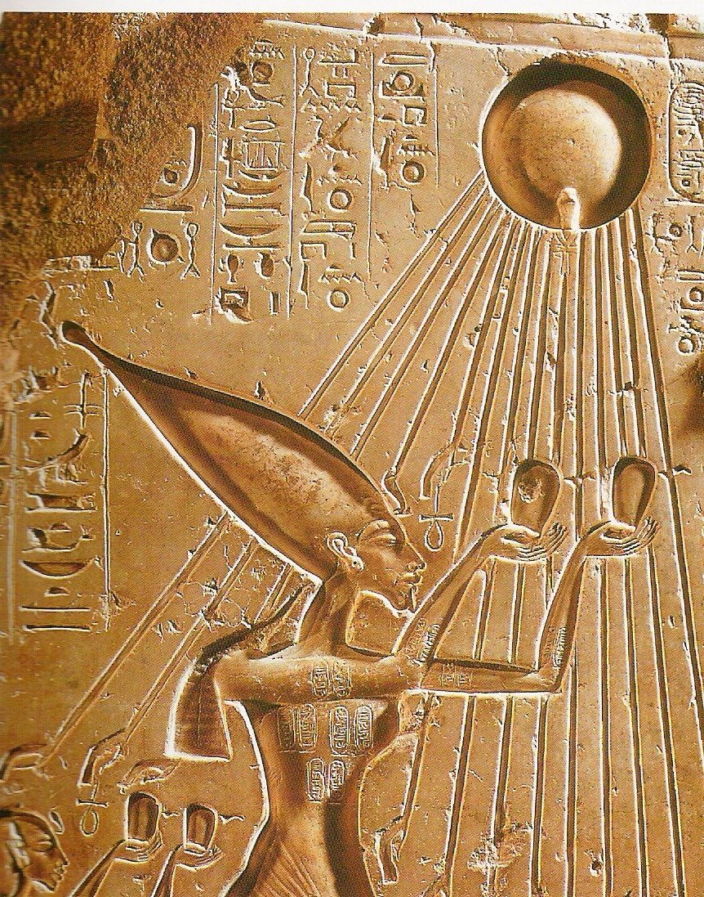

INTRODUCTION
World history or global history as a field of historical study examines history from a global perspective.
It emerged centuries ago; leading practitioners have included Hegel (1770-1831) Voltaire (1694-1778) and Arnold J. Toynbee (1889-1975).
The field became much more active (in terms of university teaching, text books, scholarly journals, and academic associations) in the late 20th century.It is not to be confused with comparative history, which, like world history, deals with the history of multiple cultures and nations, but does not do so on a global scale. World history looks for common patterns that emerge across all cultures.
World historians use a thematic approach, with two major focal points: integration (how processes of world history have drawn people of the world together) and difference (how patterns of world history reveal the diversity of the human experience).
13,700,000,000 YEARS AGO
The Universe Explodes into Being
The Big Bang theory is the prevailing cosmological model explaining the existence of the observable universe from the earliest known periods through its subsequent large-scale evolution. The model describes how the universe expanded from an initial state of high density and temperature,and offers a comprehensive explanation for a broad range of observed phenomena, including the abundance of light elements, the cosmic microwave background (CMB) radiation, and large-scale structure. Crucially, the theory is compatible with HubbleU+2013Lemaître law—the observation that the farther away a galaxy is, the faster it is moving away from Earth. Extrapolating this cosmic expansion backwards in time using the known laws of physics, the theory describes an increasingly concentrated cosmos preceded by a singularity in which space and time lose meaning (typically named "the Big Bang singularity"). Detailed measurements of the expansion rate of the universe place the Big Bang singularity at around 13.8 billion years ago, which is thus considered the age of the universe.
1348 B.C.E
Pharaoh Worships Sun-Disk God Aten
Read more
1279 B.C.E
Ramses II Crowned in Egypt
1250 B.C.E

Moses Leads His People Out of Egypt
Read more
431 B.C.E
Pericles Praises Dead from Pelloponnesian War
Pericles begins by praising the dead, as the other Athenian funeral orations do, by regard the ancestors of present-day Athenians (2.36.1–2.36.3), touching briefly on the acquisition of the empire. At this point, however, Pericles departs most dramatically from the example of other Athenian funeral orations and skips over the great martial achievements of Athens' past: "That part of our history which tells of the military achievements which gave us our several possessions, or of the ready valour with which either we or our fathers stemmed the tide of Hellenic or foreign aggression, is a theme too familiar to my hearers for me to dwell upon, and I shall therefore pass it by."[14] Instead, Pericles proposes to focus on "the road by which we reached our position, the form of government under which our greatness grew, and the national habits out of which it sprang".[14] This amounts to a focus on present-day Athens; Thucydides' Pericles thus decides to praise the war dead by glorifying the city for which they died.
Events in Countries

AFGANISTHAN
Mahmud becomes emir of Ghazni
British withdraw
Soviet Union invades